6组7场，14张全场/局部图；0新PM推理、0拟合。按预定诊断规则选例，不能代替全样本评价。
固定用户原六格，不替换为好看位置。圈定CS相对COMPACT额外降低 -3.2724，不是误差改善证明。
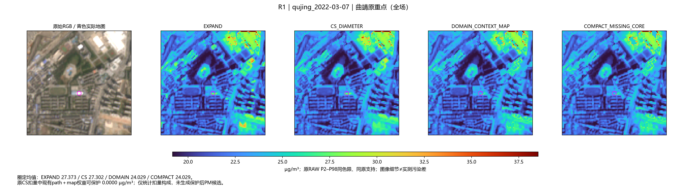
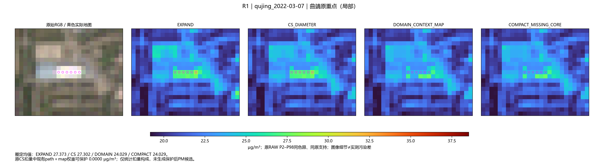
既有锁定道路－侧边对比最大下降。圈定CS相对COMPACT额外降低 0.0030，不是误差改善证明。
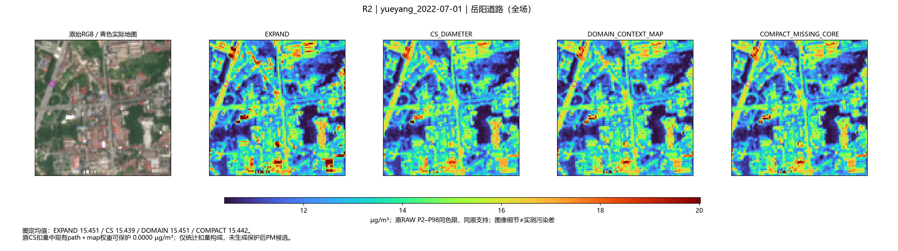
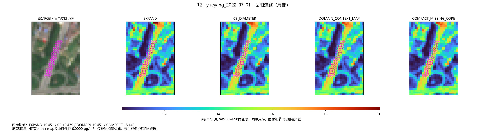
固定A/B共同夏日；呈现无明显优势。圈定CS相对COMPACT额外降低 -0.3764，不是误差改善证明。
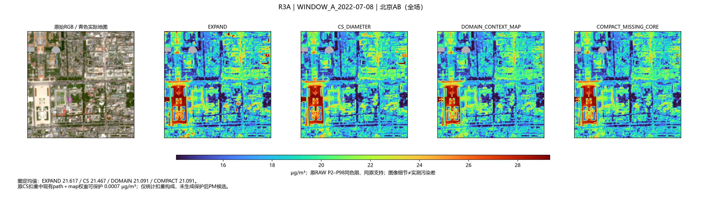
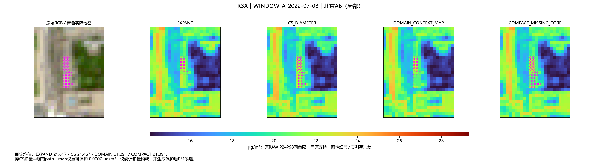
固定A/B共同夏日；呈现弱优势。圈定CS相对COMPACT额外降低 0.1996，不是误差改善证明。
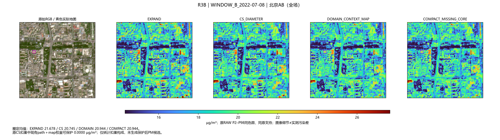
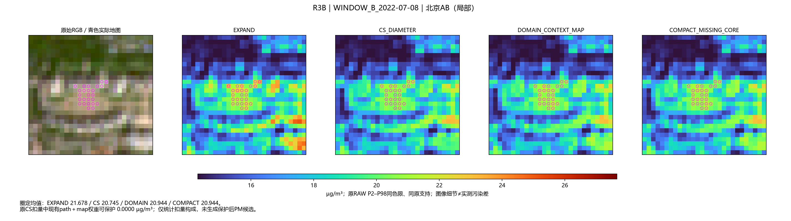
不同城市输入小亮均值额外缓解前两场。圈定CS相对COMPACT额外降低 2.0480，不是误差改善证明。
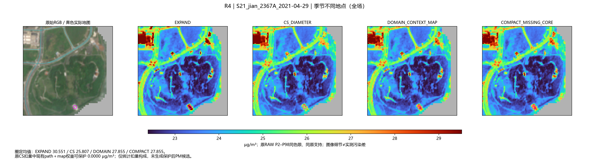
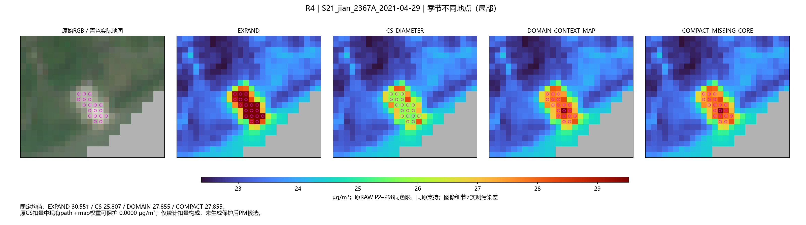
不同城市输入小亮均值额外缓解前两场。圈定CS相对COMPACT额外降低 1.4920，不是误差改善证明。
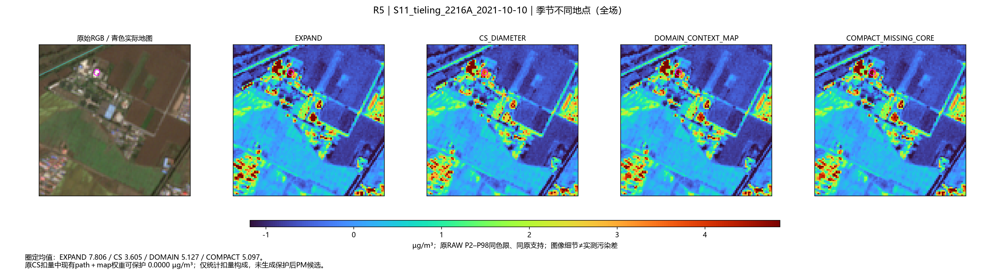
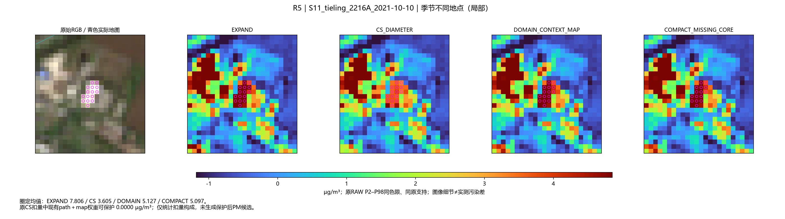
不同城市实际道路长度加权额外削减最大场。圈定CS相对COMPACT额外降低 13.5523，不是误差改善证明。
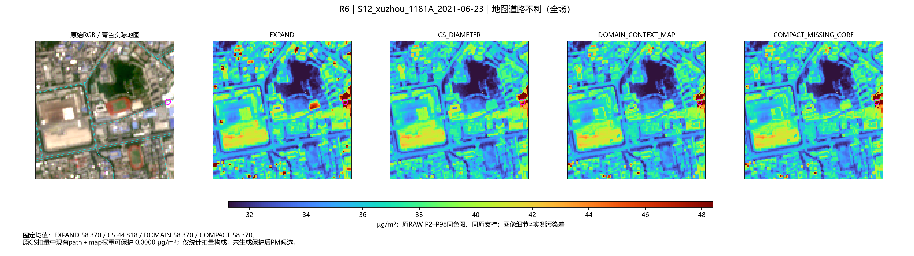
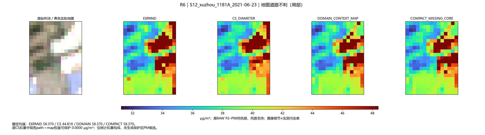
已有QC/AC对照中CS相对EXPAND最大对比度下降；非工业匹配真值。该处位于OSM石油住宅地块内，仅为浅色外观对照，不是工业排放真值。
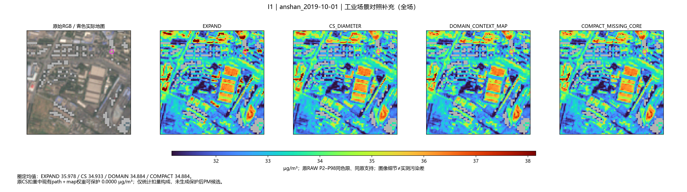
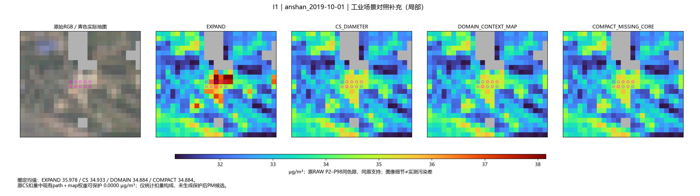